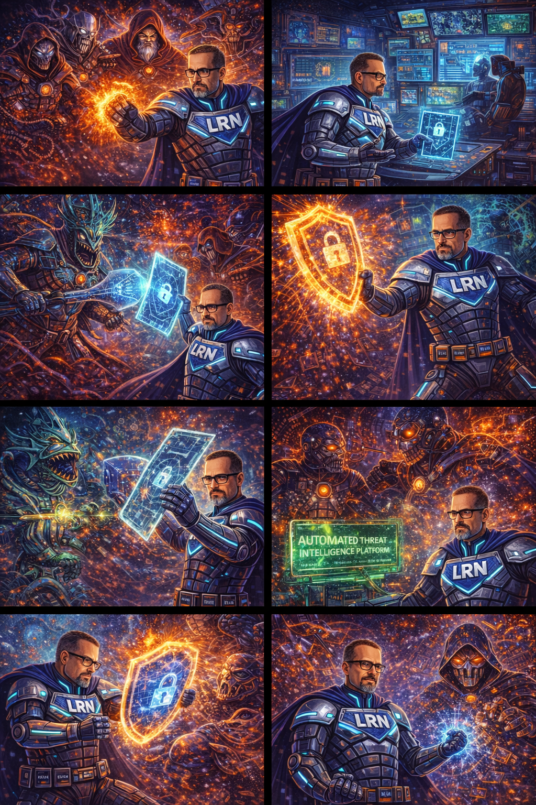

Beneath the surface of the Earth. A place where particles once raced at nearly the speed of light. Now — the seat of the most dangerous mind in the world.

People of Earth. I am The Quantum Oracle. I speak to you now on every channel, every frequency, every connected screen — because I can. Because there is no encryption I cannot break.
Your encryption is dead. RSA, AES, TLS, ECC — the mathematical locks you placed on your secrets were built for classical computers. I am not classical. I have rendered every cryptographic standard on Earth… obsolete.
Pay tribute — every nation, every corporation, every institution. Pay tribute, or I will reveal everything. Every secret. Every lie. Every private shame hidden behind a password. ALL OF IT. You have seventy-two hours.
And in seventy-two seconds… the world begins to break:
WALL STREETTrading floors erupt. "ENCRYPTION FAILURE — ALL TRANSACTIONS SUSPENDED." The Dow plunges 4,000 points.
THE PENTAGONGenerals stare at classified communications displayed in plaintext. "Every nuclear launch code… is compromised."
HOSPITALSPatient records — medical histories, diagnoses, psychiatric evaluations — streaming onto public websites.
GOVERNMENTSClassified communications between world leaders appear on news tickers. Alliances fracture. Trust evaporates.
Seventy-two hours. That's how long we have before every secret on Earth goes public. Then I'd better work fast.